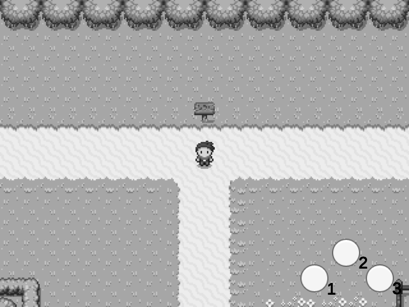
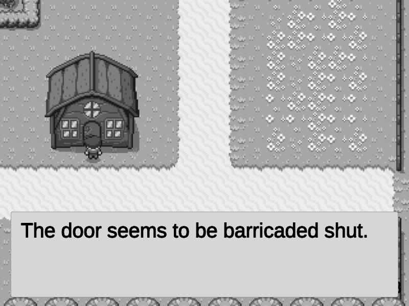
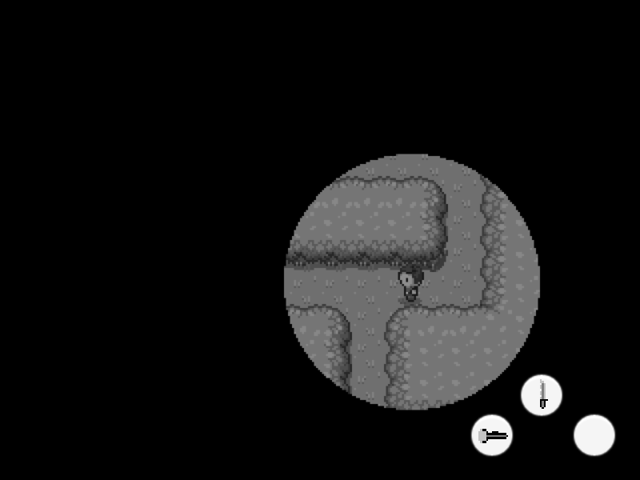

Portfolio/2D Zelda-Like Horror Demo
| Project Type: | Game |
| Genre: | Horror, Action-Adventure |
| About Project: | The goal of this project was to create a retro-inspired action-adventure game with a horror aesthetic, an inventory system similar to Zelda, and a simple interaction/dialog system. This demo's inventory system and item use system are achieved using polymorphism. The interaction/dialog system is built using a dialog controller and the built-in unity UI system. |
| Technologies: | Unity, C# |
| Controls: |
|
| Screenshots: |    |
| Project Link: | Play 2D Zelda-LIke Horror Demo |